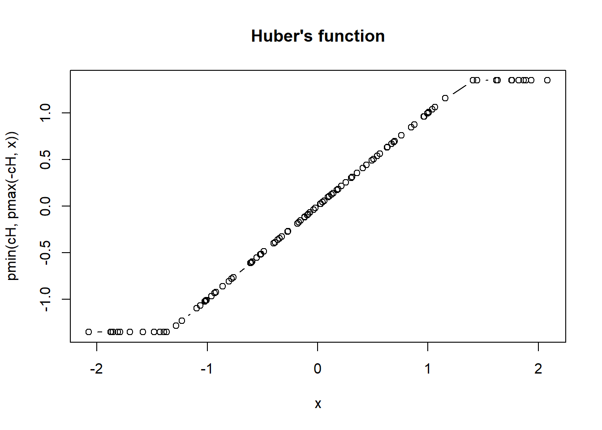

Chapter 3 1. R B?sico
Iremos abordar as express?es b?sicas do R. Come?aremos simples, com n?meros, strings e valores true/false. Em seguida, mostraremos como armazenar esses valores em vari?veis e como transmiti-los as fun??es. Como obter ajuda sobre as fun??es e no final vamos carregar um arquivo
3.1 1.1 Express?es
Digite qualquer coisa no prompt, e o R ir? avali?-lo e imprimir a resposta. Vamos tentar matem?tica simples. Digite o comando abaixo e aperte enter
## [1] 10Note que ? impresso o resultado, 10. Digite a frase “Engenharia Agr?cola”
## [1] "Engenharia Agr?cola"Agora tente multiplicar 6 vezes 5 (* ? o operador de multiplica??o).
## [1] 303.2 1.2 Valores true/falso
Algumas express?es retornam um “valor l?gico”: TRUE ou FALSE e/ou “booleanos”. Vamos tentar digitar uma express?o que nos d? um valor l?gico:
## [1] TRUEE outro valor l?gico (sinal duplo de igualdade)
## [1] FALSET e F s?o taquigrafia para TRUE e FALSE. Tente isso:
## [1] TRUE3.3 1.3 Vari?veis
voc? pode armazenar valores em uma vari?vel para usar mais tarde. Digite x <- 28 para armazenar um valor em x.
Tende dividr x por 4( / ? o operador da divis?o).
## [1] 7Voc? pode retribuir qualquer valor a uma vari?vel a qualquer momento. Tente atribuir “Engenharia Agr?cola”em x.
Tente imprimir o valor atual de x.
## [1] "Engenharia Agr?cola"3.4 1.4 Fun??es
Voc? pode chamar uma fun??o digitando seu nome, seguido de um ou mais argumentos para essa fun??o entre par?nteses.
Vamos tentar usar a fun??o sum, para adicionar alguns n?meros. Entrar:
## [1] 12Alguns argumentos t?m nomes. Por exemplo, para repetir um valor 3 vezes, voc? chamaria a fun??o rep e forneceria seu argumento times:
## [1] "Engenharia Agr?cola" "Engenharia Agr?cola" "Engenharia Agr?cola"Tente chamar a fun??o sqrt para obter a raiz quadrada 16.
## [1] 43.5 1.5 Ajuda
help(XXXXX) traz ajuda para a fun??o desejada. Tente exibir ajuda para a mean fun??o:
## starting httpd help server ... doneexample (XXX) traz exemplos de uso para a fun??o dada. Tente exibir exemplos para a min fun??o:
##
## min> require(stats); require(graphics)
##
## min> min(5:1, pi) #-> one number
## [1] 1
##
## min> pmin(5:1, pi) #-> 5 numbers
## [1] 3.141593 3.141593 3.000000 2.000000 1.000000
##
## min> x <- sort(rnorm(100)); cH <- 1.35
##
## min> pmin(cH, quantile(x)) # no names
## [1] -1.69648726 -0.56045307 0.03382502 0.68662897 1.35000000
##
## min> pmin(quantile(x), cH) # has names
## 0% 25% 50% 75% 100%
## -1.69648726 -0.56045307 0.03382502 0.68662897 1.35000000
##
## min> plot(x, pmin(cH, pmax(-cH, x)), type = "b", main = "Huber's function")
##
## min> cut01 <- function(x) pmax(pmin(x, 1), 0)
##
## min> curve( x^2 - 1/4, -1.4, 1.5, col = 2)
##
## min> curve(cut01(x^2 - 1/4), col = "blue", add = TRUE, n = 500)
##
## min> ## pmax(), pmin() preserve attributes of *first* argument
## min> D <- diag(x = (3:1)/4) ; n0 <- numeric()
##
## min> stopifnot(identical(D, cut01(D) ),
## min+ identical(n0, cut01(n0)),
## min+ identical(n0, cut01(NULL)),
## min+ identical(n0, pmax(3:1, n0, 2)),
## min+ identical(n0, pmax(n0, 4)))